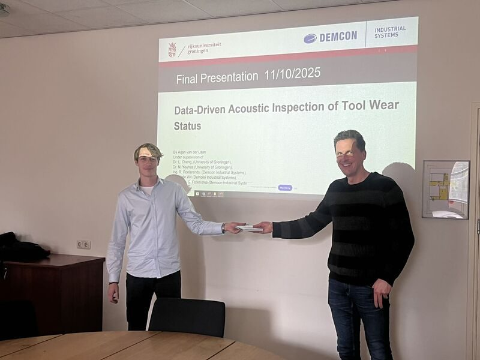

October 2025
Data-driven acoustic inspection of tool wear status
Congrats to Arjan van der Laan in the completion of his design project last week, titled "Data-driven Acoustic Inspection of Tool Wear Status", in Demcon, together with his company supervisors Remco Poelarends, Ger Folkersma, Johan de Wit and second supervisor from Engineering and Technology institute Groningen Nabeel Younas, PMP®.
This project explores the feasibility in using microphone as a contactless sensing solution to detect the tool conditions under various worn stages. This preliminary study shows a promising result of the proposed novel integration solution by coupling "gray-box" data-driven models with wideband acoustic signals, which hints future continuations of this research methodology in industrial application settings.
Congratulation again Arjan van der Laan, and best wishes to your next journey.
